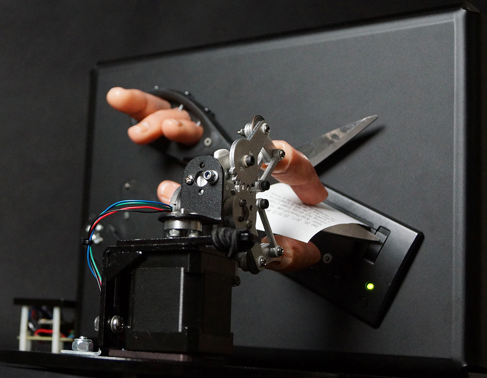
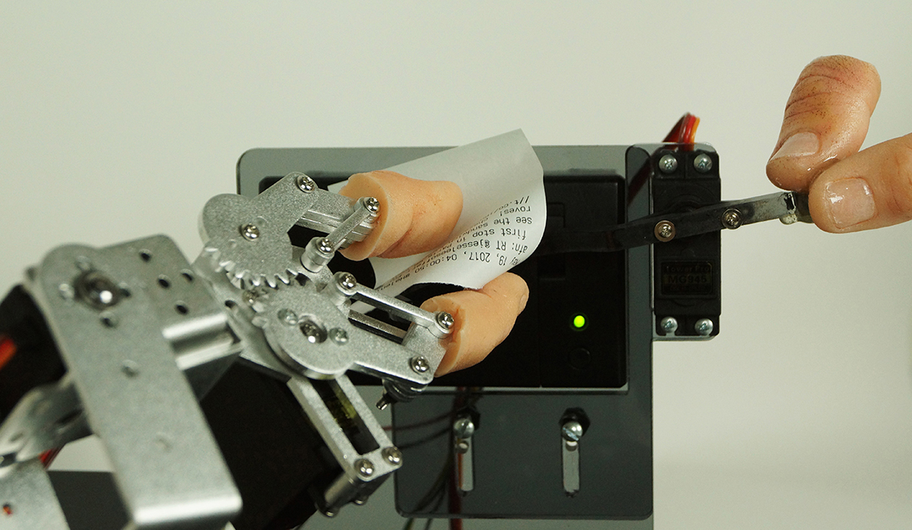
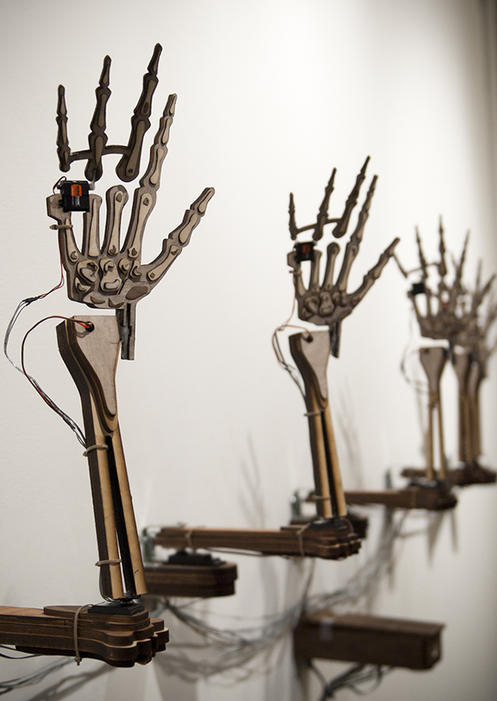
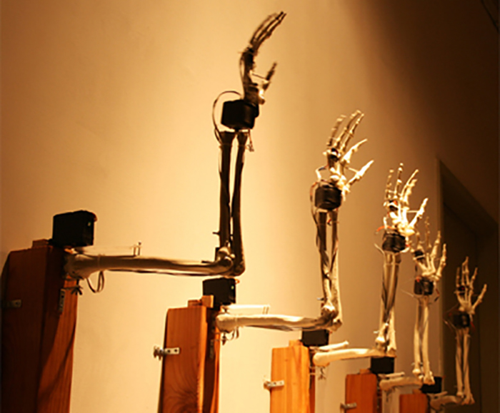
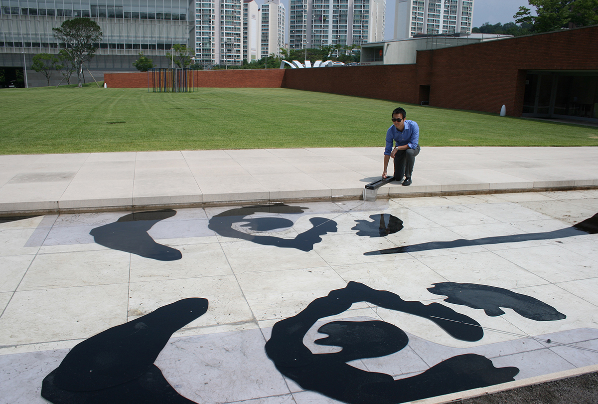
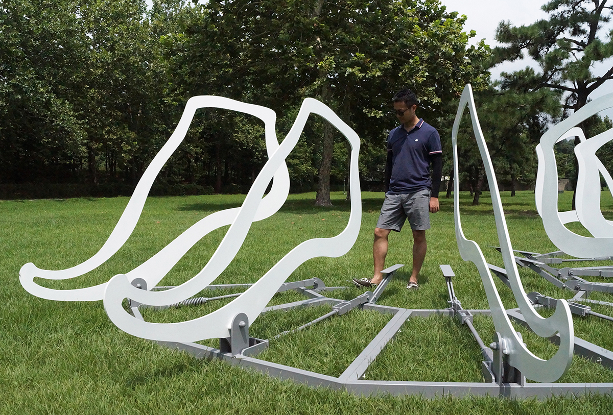
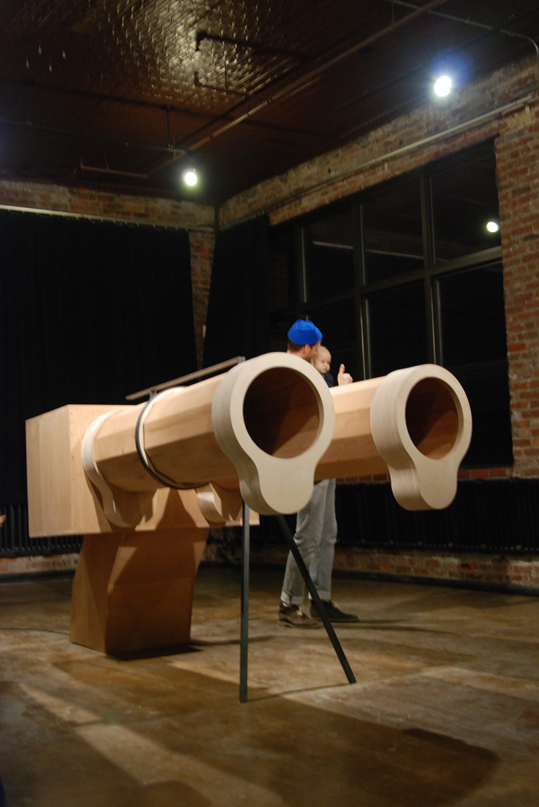

Hye Yeon Nam
2018 Smithsonian Artist Research Fellowship (SARF) - Artwork Samples
1. Invisible v.2 (2017)

2. Invisible v.1 (2017)

3. Please Smile (v.2 Wood/ v.1 Plastic) (2011)


4. Floating Identity (2017, 2015)

5. A Journey of Footsteps (2016)

6. Whatever You Say (2012)
